Ljubljana Hi-Fi Show 2005 reportage:
On 7 October 2007 I visited the Ljubljana Hi-Fi Show togheter with my friends Znort and George Gloomy. Before to endure the show we needed some rest, eating fish along the Ljubljanica river (as visible in this nice picture).
This is the reportage which I wrote in italian for the Audiophile Sound review, but they never published it!
Dal 7 al 9 ottobre 2005 si è svolta l'annuale fiera dell'alta fedeltà di Lubiana (Slovenia): un'occasione troppo ghiotta per gli audiofili del Nord-Est, che impiegano 5 ore per raggiungere Milano, mentre Lubiana è a solo un'ora dal confine di Trieste. La fiera non è così grande come il TopAudio, ma nonostante le dimensioni ridotte si possono ascoltare molti impianti degni di nota, nonché comperare dischi a prezzi convenienti.
|
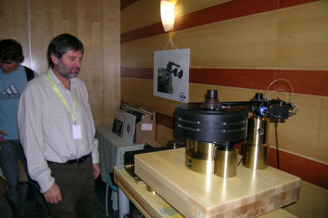 Mr. Franz Kuzma observing his Stabi XL (77kg). |
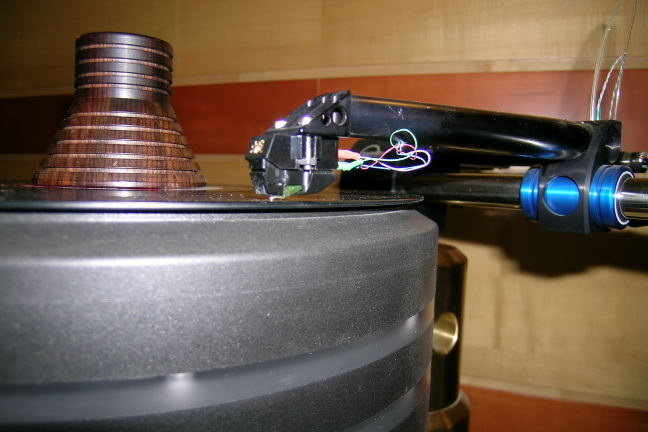 The Myabi (47-Labs) cartridge mounted on the Kuzma Air Line tangential tonearm. |
|
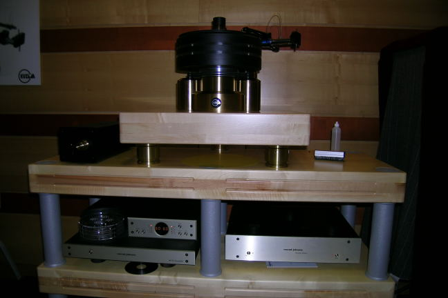 Conrad Johnson Art-2 pre and Premier Fifteen phono. |
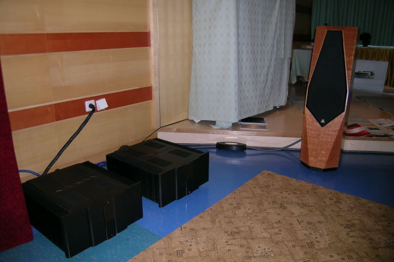 The Karan super monoblocks (270 W) driving the Avalon Eilodon. |
Quest'anno gli impianti "grandi" erano due: l'impianto Kuzma-CJ-Karan-Avalon e l'impianto Weiss-Hovland-Gryphon-AvantGarde.
|
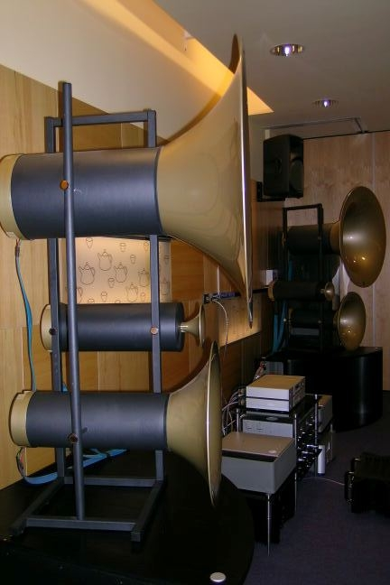 The big Avant Gard horne |
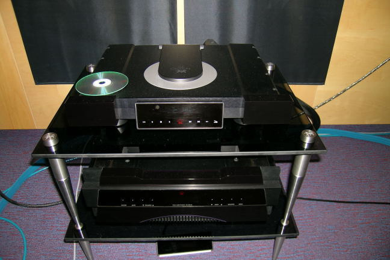 Gryphon Mikado and Callisto |
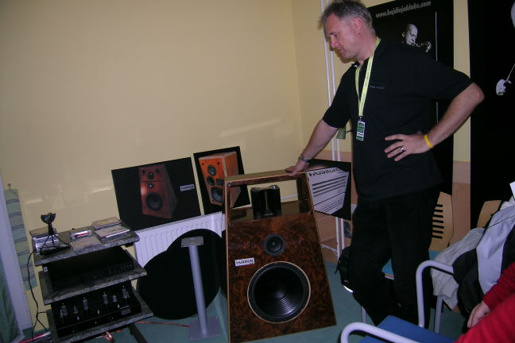 Hajdiniak ampli and Heil tweeter and 30cm woofer sp. |
|---|---|---|
|
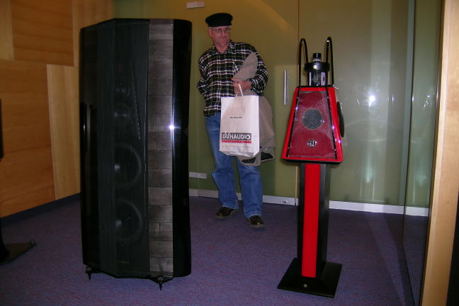 Sonus Faber Amati Homage and the “small” MBL 21 in Ferrari red |
||
|
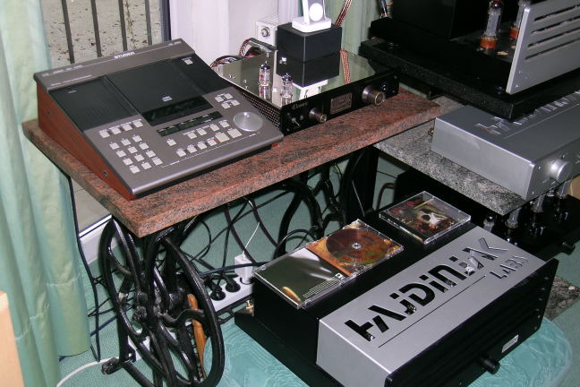 Slovenian handmade Hajdiniak drived by an old Studer on a “vintage” table. |
Poi c'erano impianti "minori" come l'accoppiata Gryphon Mikado e Callisto che pilotavano le MBL 21, il giradischi Notthingham Dais amplificato dalle elettroniche Plinius, l'impianto tutto Naim o quello audio-video McIntosh. La Cina era ben rappresentata da tutta la famiglia di elettroniche Shanling, Usher (che non fa solo casse) e King's (pannelli elettrostatici).
L'italia era rappresentata da Unison, Opera e da una schiera di Sonus Faber, Stradivari Homage comprese (ma solo in esposizione).
Molte anche le ditte locali che esponevano le loro creature: a parte Kuzma, ci hanno positivamente impressionato le elettroniche valvolari Hajdinjak Labs che pilotavano casse col tweeter di Heil della stessa ditta (come sorgente usavano anche varie registrazioni live riversate semze compressioni su Hard-Disc, connesso al piccolo D/A della locale Stylos, specializzata in convertitori).
Gli ex compatrioti Croati e Serbi erano rappresentati in particolare dai diffusori Audio Epiloge (ottima la cioccolata!) e dagli amplificatori Karan.
|
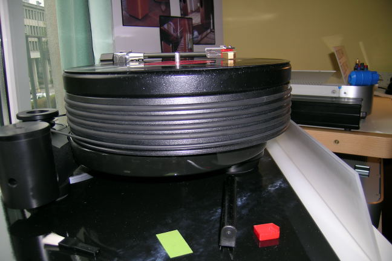 Nottingham Dais with an old Decca cartidge |
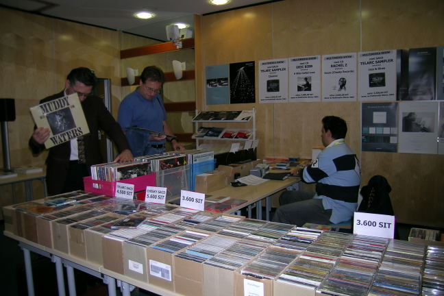 Too many vinyls at reasonable price! |
|---|
Insomma, il centro di Lubiana val bene una visita (si dice sempre così alle mogli), ma anche gli audiofili trovano di che deliziarsi!
Tino © May 2007
{kind=link}